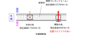
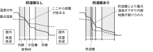

2024年
問題49 冬季の結露に関する次の記述のうち，最も不適当なものはどれか．
（1）戸建て住宅では，外気に面した壁の出隅部分の室内側で表面結露しやすい．
（2）室内で家具などを外壁に接して設置すると，家具の裏側での結露防止に効果がある．
（3）局部的に断熱が途切れて熱橋となった部分は，結露しやすい．
（4）換気の悪い非暖房室では，暖房室で発生した水蒸気が拡散などにより流入し，温度の低い窓面で結露が生じやすい．
（5）壁の内部結露の防止には，外壁内断熱層の室内側に防湿層を設けることが有効である．
2024年
問題49 正解（2） 頻出度AAA
結露防止のためには，家具と壁の間に適当な隙間を設け，気流を通すことにより，湿気，冷気の滞留を防ぐ．
物体の表面に結露を生じさせないためには，物体の表面温度をそれに接する空気の露点温度より高く保つ必要がある．そのためには物体の温度を高く保つか，空気の絶対湿度を下げて露点をできるだけ低く保つことが必要である．
-(1) 「出隅」2024-49-1 図参照．
-(3) 熱橋については2024-49-2図参照．

-(5) 断熱材を挟んで，水蒸気分圧の高い側に湿気伝導率の低い層（防湿層）を入れるのが内部結露防止対策の基本である．
壁内部では，冬季の場合，暖房によって屋内が高温多湿なので，室外に向かって熱流が流れると同時に，水蒸気も水蒸気圧の差によって屋内から屋外に向かって湿流が生じる．壁の部材の温度は内→外に向かって温度が低下し，壁内部の空気の露点温度と交わる点から結露が始まる．これを防ぐには，断熱材の室内側に防湿層を設けて，断熱材の外側の低温部に湿流が回って内部結露するのを防げばよい（2024-49-3図参照）．
夏の場合は，冷房によって屋外側に防湿層が要ることになる．
